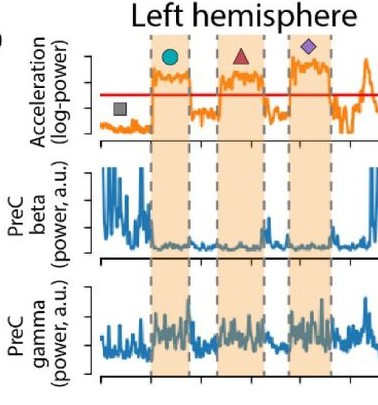
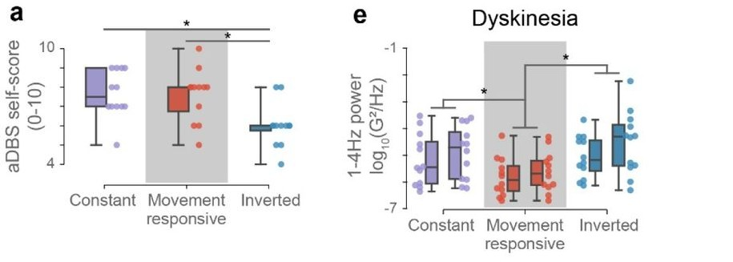

Movement-responsive deep brain stimulation for Parkinson’s disease using a remotely optimized neural decoder
In short
An implant that turned brain stimulation up while it decoded movement from the brain, and down at rest, was tested in one person with Parkinson’s disease. Its decoder was tuned from recordings the participant made alone at home, and in blinded comparisons the participant moved faster and rated it better than a control that did the reverse.
Why a fixed setting is a compromise
Deep brain stimulation treats advanced Parkinson’s disease with an implanted device that sends a steady train of electrical pulses into the basal ganglia, structures deep in the brain that help release movements with the right timing and vigor. The strength is fixed, set in the clinic, but a person’s needs change from moment to moment, and some symptoms or side effects remain.
The study frames the problem with a threshold. In a healthy brain, the basal ganglia hold back movement until the intention to move crosses it. In Parkinson’s the threshold is too high, so movements are hard to start and come out slow. Constant stimulation, like medication, lowers it all the time, whether or not the person means to move, which can let unintended movements through at rest (dyskinesia).
![Four small schematic plots of motor activation over time against a dashed movement threshold. Healthy: activation crosses a low, flat threshold and a movement is released. Parkinsonian: the threshold is high and only the tip of the activation gets through. Medicated or constant DBS: stimulation is on throughout, the threshold is low, and small crossings at rest are marked with red asterisks. Movement-responsive DBS: stimulation rises only during the movement, so the threshold drops for the movement and stays high at rest.](../figures/dbs-threshold.png)

The published legend of the full figure, verbatim
Fig. 1: Movement-responsive DBS theoretical framework. a, Motivation for the movement-responsive DBS approach is compatible with both an action selection and gain-control theoretical framework. Left: in the neurologically healthy state, the basal ganglia inhibit actions that have not yet been selected through activation beyond a gating threshold (black dashed line). When activation associated with a particular action reaches this threshold, movement is released with the appropriate timing and vigour (subthreshold activation is represented as a yellow line, which becomes green to indicate suprathreshold activation/selection and downstream movement). Middle: in the Parkinsonian state, excessive and fluctuating inhibition in the basal ganglia raises the movement threshold. This results in difficulty initiating vigorous movements. Right: in the treated Parkinsonian state (medicated/cDBS), the movement threshold is lowered through tonic disinhibition without regard for motor intent. This can result in unintended movements (red asterisks) when activation exceeds the reduced, fluctuating threshold. b, A ‘movement-responsive’ framework is proposed where stimulation (stim) is tied to motor intent, reaching higher levels during intended movement and reducing to lower levels at rest. Right: illustration of how this prevents dyskinesia when movement is not intended while providing targeted disinhibition for vigorous, volitional movement (compare to a). c, To enable movement-responsive experiments, neural data were streamed from bilateral STN and cortical electrodes in a participant implanted with the Medtronic Summit RC + S DBS system. External devices for streaming data from the implants were worn over the upper chest; however, adaptive stimulation was performed embedded on the device. Video from three cameras and wrist-worn accelerometry (Apple Watches) were simultaneously recorded and time-synced (note that the camera placement in the cartoon image is for illustration only and not indicative of the precise locations and orientations used in the study).
The idea: stimulation that follows movement
If the implant could tell when the person is moving, it could stimulate harder only then and ease off at rest. The implant used here also records activity from the stimulation target and from the motor areas of the cortex, and it can run a small decoder, a simple rule that turns a few features of that activity into a decision. The study set it to decide continuously between “moving” and “at rest” and to raise or lower stimulation to match, all on the implant itself.
Tuned from recordings made at home
A decoder like this has to be fitted to one person’s brain. Here the data came from the participant’s home office, where a recording platform put the implant’s signals, smartwatches on both wrists, three cameras and the keyboard on one clock. The participant ran six short sessions of simple movement tasks alone (tapping fingers, opening and closing the hand, turning the wrist, typing). The watches said when the hand was moving, and a machine-learning pipeline searched for the decoder settings that best reproduced that from brain activity alone, within what the implant can compute.


What the blinded comparison showed
The participant then tried three settings in a random order, without being told which was which, in sessions spread over about five months: the movement-responsive setting, conventional constant stimulation, and an inverted control with the opposite rule (stronger at rest, weaker during movement), which separates the direction of the switching from switching as such.
Compared with the inverted control, the dominant hand moved faster and the participant rated the therapy as more effective. Compared with constant stimulation, the participant typed faster and had less involuntary movement at rest.


What it shows, and what it does not
This is a proof of principle in one participant. It shows that a decoder small enough to run on the implant can follow movement, that its settings can be found from data a patient records at home, and that stimulation tied to movement made a difference the participant could feel and that could be measured. It cannot say whether the approach helps other people with Parkinson’s. The authors see the home pipeline as a way to make this kind of personal tuning easier to scale.
For the details (how the decoder was built and searched, the stimulation levels, every measure and test), see the paper or the open preprint.
My part
I am the third of eleven authors; the study was led by Tanner Dixon, with Jeffrey Herron, Simon Little and Jack Gallant supervising. From the paper’s contribution statement: with Gabrielle Strandquist, Tomasz Frączek and Raphael Bechtold, I designed the data-collection infrastructure (the home platform that brings the implant, the wrist watches, the cameras and the keyboard onto one clock, described in Strandquist et al. 2023), and with Tanner Dixon, Gabrielle and Raphael, I analyzed the data. The same kind of home recording is the basis of Chapter 3 of my thesis, which asks how the stimulation level changes the link between movement and brain activity.
Written for this page. The figures are the authors’: Fig. 1 from the published paper, the others from the medRxiv preprint (CC BY 4.0), as credited under each.
Abstract
Deep brain stimulation (DBS) has garnered widespread use as an effective treatment for advanced Parkinson’s disease. Conventional DBS (cDBS) provides electrical stimulation to the basal ganglia at fixed amplitude and frequency, yet patients’ therapeutic needs are often dynamic with residual symptom fluctuations or side effects. Adaptive DBS (aDBS) is an emerging technology that modulates stimulation with respect to real-time clinical, physiological or behavioural states, enabling therapy to dynamically align with patient-specific symptoms. Here we report an aDBS algorithm intended to mitigate movement slowness by delivering targeted stimulation increases during movement using decoded motor signals from the brain. Our approach demonstrated improvements in dominant hand movement speeds and study participant-reported therapeutic efficacy compared with an inverted control, as well as increased typing speed and reduced dyskinesia compared with cDBS. Furthermore, we demonstrate proof of principle of a machine learning pipeline capable of remotely optimizing aDBS parameters in a home setting. This work illustrates the potential of movement-responsive aDBS as a promising therapeutic approach and highlights how machine learning-assisted programming can simplify complex optimization to facilitate translational scalability.
BibTeX
@article{dixon2026movement,
title = {Movement-responsive deep brain stimulation for Parkinson's disease
using a remotely optimized neural decoder},
author = {Dixon, Tanner C. and Strandquist, Gabrielle and Zeng, Alicia and
Fr{\k{a}}czek, Tomasz and Bechtold, Raphael and Lawrence, Daryl and
Ravi, Shravanan and Starr, Philip A. and Gallant, Jack L. and
Herron, Jeffrey A. and Little, Simon J.},
journal = {Nature Biomedical Engineering},
volume = {10},
number = {1},
pages = {110--124},
year = {2026},
doi = {10.1038/s41551-025-01438-0}
}